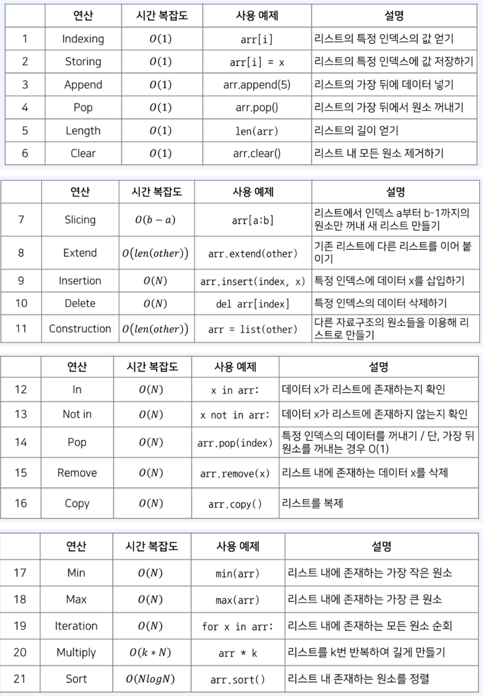

Data Structure (4) Python List
Python List
Engineering
Data Structure for Data Science
Author
Kwangmin Kim
Published
January 17, 2023

| Number | Methods | Time Complexity | Examples | Description |
|---|---|---|---|---|
| 1 | Indexing | \(O(1)\) | arr[i] |
리스트의 특정 인덱스의 값 얻기 |
| 2 | Storing | \(O(1)\) | arr[i] = x |
리스트의 특정 인덱스에 값 저장하기 |
| 3 | Append | \(O(1)\) | arr.append(5) |
리스트의 가장 뒤에 데이터 넣기 |
| 4 | Pop | \(O(1)\) | arr.pop() |
리스트의 가장 뒤에서 원소 꺼내기 |
| 5 | Length | \(O(1)\) | len(arr) |
리스트의 길이 얻기 |
| 6 | Clear | \(O(1)\) | arr.clear() |
리스트 내 모든 원소 제거하기 |
| 7 | Slicing | \(O(b-a)\) | arr[a:b] |
리스트에서 인덱스 a부터 b-1까지의 원소만 꺼내 새 리스트 만들기 |
| 8 | Extend | \(O(len(other))\) | arr.extend(other) |
기존 리스트에 다른 리스트를 이어 붙이기 |
| 9 | Insertion | \(O(N)\) | arr.insert(index, x) |
특정 인덱스에 데이터 x를 삽입하기 |
| 10 | Delete | \(O(N)\) | del arr[index] |
특정 인덱스의 데이터 삭제하기 |
| 11 | Construction | \(O(len(other))\) | arr = list(other) |
다른 자료구조의 원소들을 이용해 리스트로 만들기 |
| 12 | In | \(O(N)\) | x in arr |
데이터 x가 리스트에 존재하는지 확인 |
| 13 | Not in | \(O(N)\) | x not in arr |
데이터 x가 리스트에 존재하지 않는지 확인 |
| 14 | Pop | \(O(N)\) | arr.pop(index) |
특정 인덱스의 데이터를 꺼내기 / 단, 가장 뒤 원소를 꺼내는 경우 O(1) |
| 15 | Remove | \(O(N)\) | arr.remove(x) |
리스트 내에 존재하는 데이터 x를 삭제 |
| 16 | Copy | \(O(N)\) | arr.copy() |
리스트를 복제 |
| 17 | Min | \(O(N)\) | min(arr) |
리스트 내에 존재하는 가장 작은 원소 |
| 18 | Max | \(O(N)\) | max(arr) |
리스트 내에 존재하는 가장 큰 원소 |
| 19 | Iteration | \(O(N)\) | for x in arr |
리스트 내에 존재하는 모든 원소 순회 |
| 20 | Multiply | \(O(k*N)\) | arr * k |
리스트를 k번 반복하여 길게 만들기 |
| 21 | Sort | \(O(NlogN)\) | arr.sort() |
리스트 내 존재하는 원소를 정렬 |